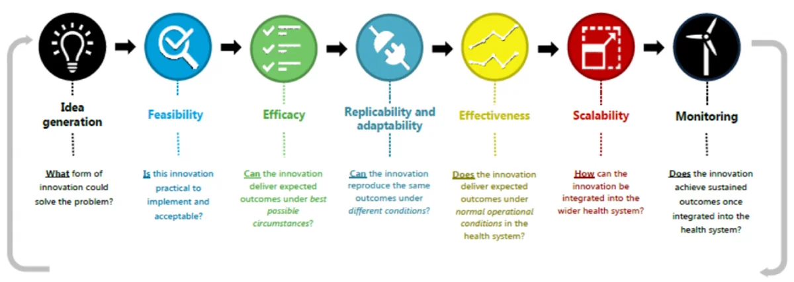
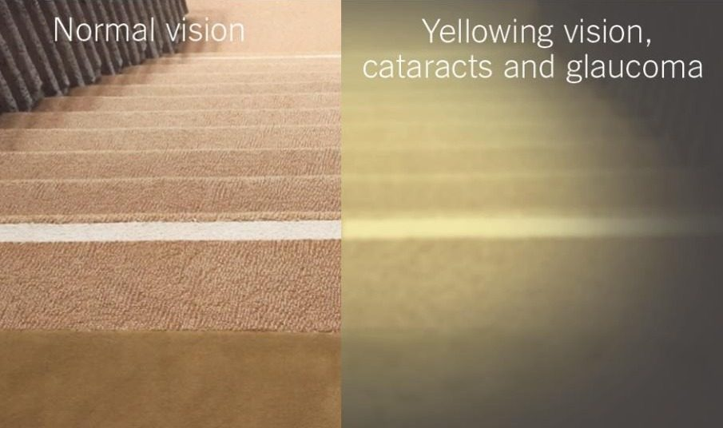
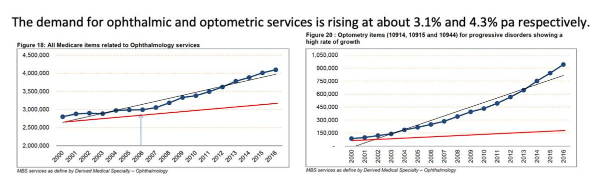
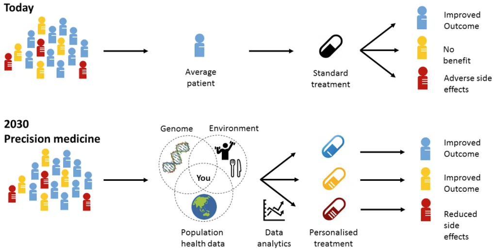

The ability to see is deeply important. In adults, healthy eyes and a healthy visual system can reduce the risk of chronic disease, falls, admission to aged care, isolation, depression and even death. In children a healthy visual system contributes to social development, academic achievement and better overall health for life.
Understanding and protecting this precious sense is critical.
The National Eye Research Network brings together Australia’s leading eye research institutes to address preventable blindness. Together, Australia’s eye health researchers are developing a multi-disciplinary approach to eye and vision research.
Here’s their plan to save sight.
The business case for eye research
While 90% of eye disease in Australia is preventable or treatable if diagnosed early, the incidence of vision loss is growing and the cost to the economy rising each year. More than half a million Australians suffer from severe vision loss or blindness and that number will double by 2030 if no action is taken. The cost to the economy exceeds $27 billion and continues to rise, with those who suffer vision loss twice as likely to use health services and be admitted to aged care three years earlier.
Vision loss is an expensive and solvable health care problem. Despite the evidence supporting its value to the broader economy, eye health care and vision research are chronically underfunded in Australia.
National network for better eye health in Australia
Quality vision science requires sustained effort and sustained funding. To that end, Vision 2020 Australia has convened the National Eye Research Network to advocate for sustainable funding for eye and vision related research in Australia. The Network is comprised of eye health experts from across the nation, including the Queensland Eye Institute, and offers a roadmap for better eye health and vision care, sign posted with a 10-point plan for eye research.
The National Eye Research Network promotes a cross-sector, multidisciplinary approach to address the following objectives.
Develop a pathway for the eye health and vision research sector
The remarkable advances in treatments for eye disease in the last 50 years point to the value of sustained research. In particular, the vision experiments of Nobel Prize winners Hubel and Weasel had a profound impact on our understanding about the visual system. From their initial report in 1959, Hubel and Weasel’s experiments extended over more than 25 years. Their groundbreaking research also expanded the world’s understanding about how the brain works, specifically how neurons in the brain are organised to produce visual perception. Because the eye is easily accessed, what is discovered about the eye and visual system will have important application in other parts and systems of the body which are more difficult to explore.
Despite the evident benefits of investing in research over a sustained and substantial period, Government support in Australia has plateaued in the last five years. This stagnation acts as a disincentive for early career researchers, who have no reliable mechanism to support them through a long-term career in science.
For comparison, the United States funds eye research four times more than Australia on a per capita basis, giving more security to researchers at an earlier stage in their careers, enabling them to build strong foundations and dedicate themselves to science.
Of course, research isn’t confined to the laboratory. It happens along a continuum from innovation and idea generation to a point when there are real community benefits. There are many steps along that continuum, including implementation science and health systems research, which are essential disciplines to having preventive measures scaled and available to people who need them most.

Across Australia there is incredible research into biomarkers, genomics, new ocular imaging and functional testing methodologies and artificial intelligence. There is great work underway in children’s vision and health system integration.
As this research progresses, it’s important to promote interdisciplinary teamwork among research and other scientists, and keep patient-centred care at the forefront, ensuring the best use of limited healthcare resources.
Address the growing burden of vision loss
While underscoring the value of sustained research funding to the economy, academic modelling also presents a clear business case for greater investment in eye health services.
There are common risk factors affecting sight and other critical health systems, and there are indirect health and social consequences arising from vision loss and impairment. For example, there is an increased risk of between 1.3 and 1.7 times of all-cause mortality associated with vision loss, and particularly cardiovascular disease mortality. Vision loss and blindness are associated with a three-times increase in depression and anxiety, two-times increase in falls and four- to eight-times increase in hip fractures.
Investing in eye health services has compounding benefits. For example, a recent Australian study estimates that timely access to cataract surgery could prevent falls and other costly events like motor vehicle crashes. The study suggests a reduction in public hospital waiting times for cataract surgery from 12 to 3 months would prevent more than 50,000 falls. Even considering the cost of doing those surgeries, the health system would save $6.6 million.
Australia has an ageing population. The prevalence of some of the major causes of vision loss – cataract, glaucoma and age-related macular degeneration – all gets much higher in older age groups. There’s a very large proportion of older Australians (80+) having these eye conditions and the increase, particularly in age-related macular degeneration, is exponential.
These figures allow us to model changes based on population growth, revealing a trend that will result in dramatic increases in prevalence of these conditions very soon.
The simulation in the images below shows some of these age-related changes to vision arising from cataracts and glaucoma. What people with normal vision would see on the left is clearly defined edges to stairs. This clarity is lost in the image on the right, which simulates how cataract stops light getting through to the eye and glaucoma causing loss of visual field, particularly in the periphery.

Improve equity of access to timely eye health care
Australia is not producing eye health practitioners at a rate sufficient to match its aging population. Furthermore, the distribution of eye care providers like ophthalmologists and optometrists doesn’t always match the at-risk or at-need population.
In the charts below, the blue lines represent growing demand for ophthalmology (left) and optometry (right) services. The red lines show health care provider growth in the sectors.

Demand for services will soon outstrip Australia’s capacity to supply based on current models. In particular, the Australian Atlas of Healthcare Variation reveals disparities in cataract surgery rates for people living in rural and regional areas and lower socio-economic areas of our larger cities. Clearly, new strategies are required to streamline services and ensure access for all Australians to this sight-saving surgery.
Close the gap
In Australia there is a clear difference in disease prevalence between indigenous and non-indigenous people. Indigenous populations are much more likely to have vision impairment and blindness and suffer more from diabetic retinopathy, for example, than glaucoma or macular degeneration.
Overall, Aboriginal and Torres Strait Islander Australians are at three times increased risk of vision impairment. Australia’s geography and skewed population distribution challenge the eye health sector to provide equitable and timely access to treatments.
Improve the quality of life for patients with vision impairment
Everybody experiences disease in a slightly different way and can have slightly different manifestations and risk factors for diseases that compromise their eye health.
Personalised treatments allow for intervention at different disease stages to reverse vision loss and restore vision. To achieve this, research is needed into how advanced therapeutics such as gene therapy, messenger RNA technology and even stem cells are applied to restore sight.

A ten-point plan for eye research
The contributions of vision scientists to date are undisputed, but there is much more to understand about the function and biology of the visual system. Increasingly advanced technologies now offer unprecedented opportunities for vision science and its translation to patient care.
Guided by its shared objectives, the National Eye Research Network is committed to the following tactics for improving vision health in Australia.
- Better understand eye function and biology
- Reduce the effects of degenerative eye diseases in an aging population
- Identify markers of early-stage disease
- Focus on person specific testing and diagnosis
- Enhance clinical trials
- Promote prevention and strengthen underlying evidence base
- Improve detection of sight-threatening disease in those at highest risk of blindness or vision loss
- Improve eye care services access and uptake
- Equity of eye health for Aboriginal and Torres Strait Islander peoples
- Understand the impacts of eye and brain disease on vision and quality of life
Authors
This document is a summary of papers presented to the International Society for Eye Research (ISER) conference held at the Gold Coast in February 2023 by:
Professor Peter McCluskey, Professor and Chair of Ophthalmology, Director Save Sight Institute, University of Sydney
Professor Mark Radford, Executive Director and CEO, Queensland Eye Institute
Professor Bill Morgan, Managing Director Lions Eye Institute and Centre for Ophthalmology and Visual Science and Professor of Ophthalmology UWA
Professor Sharon Bentley, Deputy Dean Faculty of Health and Director Centre for Vison and Eye Research, Queensland University of Technology
Professor Lisa Keay, Head of School, School of Optometry and Vision Science at UNSW, professorial fellow at the George Institute for Global Health
Professor Stephanie Watson, Head, Corneal Research Group, Save Sight Institute, USYD
Also contributing to the National Eye Research Network 10-point plan:
Professor Hugh Taylor, Melbourne School of Population and Global Health, University of Melbourne
Professor Keith Martin, Managing Director of the Centre for Eye Research Australia and Ringland Anderson Professor and Head of Ophthalmology at the University of Melbourne
Associate Professor Andrew Metha, Head of the Department of Optometry and Vision Sciences at the University of Melbourne
Professor Ted Maddess, Australian National University College of Health and Medicine